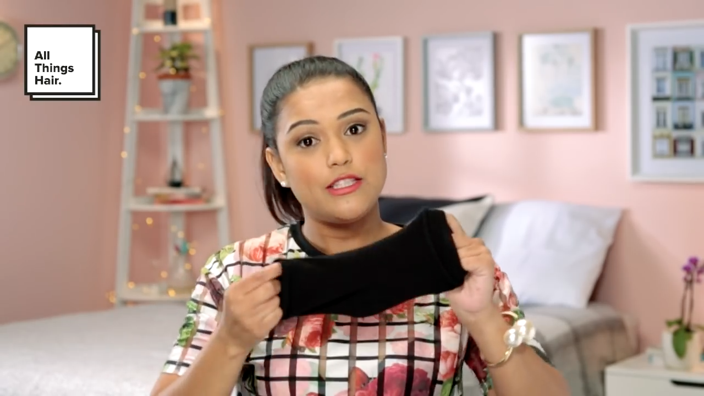

Hair hacks at their finest!
How To Create A Sock Bun
For those days when a good, simple updo would do the best for your outfit, look no further than the classic bun. This look goes with almost anything, and is great for hot summer days when we need the hair off our necks. The only thing is, you can’t your hair into this beautiful style just by twisting and pinning your hair. But not everyone has a doughnut bun inner at home, so here we show you how to create the perfect bun by using just one clean sock.

Step 1: Wash your hair
We recommend you use the TRESemmé Moisture Rich Shampoo and Conditioner to moisturize your hair and keep that moisture locked in.
Step 2: Begin your bun
First cut off the toe / foot section of a clean sock. Then tie your hair into a ponytail and thread your ponytail through the sock, keeping the sock at its full length, not squashed up.
Step 3: Nip and tuck
Once your pony is pulled through the sock, divide the hair on the ends of the pony. Roll the sock downwards, tucking in the hair as you go along. You can use bobby pins to secure the bun and tuck away any loose ends.
Step 4: Seal the deal
To get rid of flyaways and to keep the style intact, we suggest you use TRESemmé Salon Finish Extra Hold Hair Spray.
 Beauty-Full Volume
Beauty-Full Volume
Shampoo
 Beauty-Full Volume Pre-Wash
Beauty-Full Volume Pre-Wash
Conditioner
 Beauty-Full Volume
Beauty-Full Volume
Mousse
 Beauty-Full Volume
Beauty-Full Volume
Maximizer